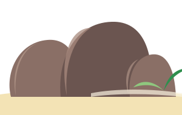

A 10 nap
A 10 nap
jelleg
pihenőnap, 1 program
napnyugta
18:14
autóval
kb. 2 × 15 perc
foglalni kell
Chez Batista
2 főre, vacsora nélkül
kb. 21 900–29 200 Ft60–80 €
- reggelAlvás, reggeli, úszás a szálloda előtti öbölbenA Kempinski reggelije benne van az árban. Vasárnap a boltok zárva vannak: ami kell, azt szombaton vegyétek meg.
- délelőttPihenés: strand, medence, árnyékNincs program. A déli órákban a legerősebb a nap (UV 9–11+), ilyenkor árnyékban.
- 12:45–15:00A nap egyetlen programja: Chez Batista, vasárnapi kreol büfé, utána fürdés az Anse TakamakánAz Anse Takamakán, 13:00–15:00. Vasárnap vacsora nincs. Foglalni kell (a Kempinski concierge-e is megteszi). Ár egy régebbi blog szerint kb. kb. 7 800 Ft350 SCR/fő. Az öböl kicsi és nyugodt, ebéd után itt lehet fürödni.
- délutánVissza a szállodába, pihenésSzieszta, medence, spa, ha kedvetek van.
- 18:14Naplemente a szálloda strandjánA strand nyugatra néz, nem kell érte autóba ülni.
- esteVacsora a szállodábanVasárnap este kevés étterem van nyitva a környéken.
